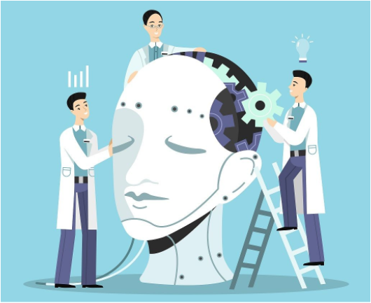
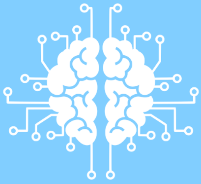
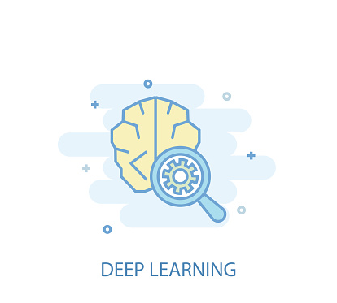

AI(인공지능)는 컴퓨터(기계)가 사람처럼 생각을 하고 사람처럼 '행동'할 수 있는 그런 기술입니다.
사람들이 반복해서 했던 행동들을 대신해 주거나 사람이 실수할 수 있는 영역에서 그것을 대신하여
정확하게 판단해 주는 그런 역할을 하고 있습니다. AI(인공지능)는 크게 진짜 로봇처럼 생각하여서
움직이는, 쉽게 말해서 '강인공지능'이라는 것이 있고, 완전 소프트웨어 레벨에서 생각만 따서 하는
'약인공지능'이란 것들이 있습니다.
AI(인공지능)개발자는 뭐에요?

인공지능개발자는 지능적 기계, 특히 지능적 컴퓨터 프로그램을 만드는 인공지능의 개발 분야의 전문인력을 말합니다.
연구자들은 인공지능을 개발하기 위해 실제 다양한 분야의 소프트웨어를 개발 합니다.
머신러닝

스스로 학습을 통해서 자기 모델의 성능을 향상 시킬 수 있는 알고리즘으로 보편적인 알고리즘을 통칭해서 머신러닝이라 합니다.
일반적으로 우리들이 계속 소프트웨어 분야에서 난제로 여겨졌던 이미지, 음성 등을 분석해야 할 패턴들이 너무나 많죠. 이것들을
코딩 규칙으로 짜기에는 성능이 나올 수 없습니다. 그리하여 이런 알고리즘들과 어떤 다양한 규칙들을 데이터를 기반으로 하여서
어떤 다양한 규칙들을 데이터를 기반으로 하여서 스스로 학습해 성능을 향상시킬 수 있는 것을, 즉 이런 알고리즘 기법들을 통칭
하여 머신러닝이라 합니다.
딥러닝

머신러닝의 한 기법으로 여러 비선형 변환기법의 조합을 통해 높은 수준의 추상화를 시도하는 기계 학습 알고리즘의 집합으로 정의되며
큰 틀에서 사람의 사고방식을 컴퓨터에게 가르치는 기계학습의 한 분야라고 이야기 할 수 있습니다. 어떠한 데이터가 있을 때 이를
컴퓨터가 알아들을 수 있는 형태로 표현하고 이를 학습에 적용하기 위해 많은 연구가 진행되고 있으며, 이러한 비전, 음성인식,
자연어 처리, 음성/신호처리 등의 분야에 적용되어 최첨단의 결과들을 보여줍니다.